Premere sul tasto Arco e poi posizionare il mouse sull'area di lavoro. Serviranno due clic uno per il punto iniziale e uno per il punto finale. Entrambi i clic sono fatti con il tasto sinistro del mouse. Non e' necessario tenere premuto il mouse fra i due clic. Anche se si tiene premuto il mouse l'arco viene disegnato, ma e' piu' semplice disegnarlo spostando il mouse e non trascinandolo
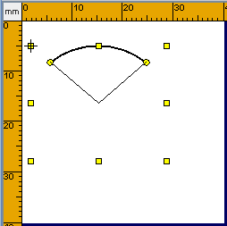 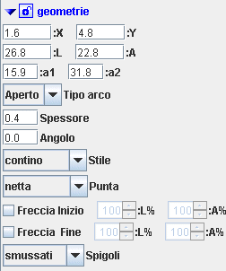
Dopo aver disegnato l'ellisse e' possibile modificarla posizionandosi con il mouse su uno dei marker premendo e trascinando. Oltre alla forma e' possibile modificare il punto di partenza e quello di fine.
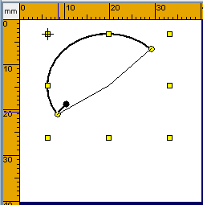 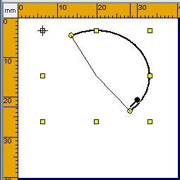 |
Archi Tratteggiati o PuntoLineaDopo aver disegnato l'arco e' possibile renderlo tratteggiato cambiando lo stile. I risultati che si possono ottenere sono mostrati di seguito 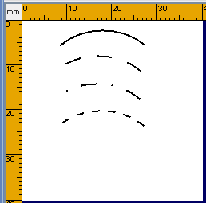 Per i dettagli su come ottenere questi risultati rimandiamo ai Rettangoli Tratteggiati o PuntoLinea |
Archi con Frecce di inizio e fineanalogamente al caso delle linee e' possibile aggiungere una freccia inizio e/o fine alla'arco. 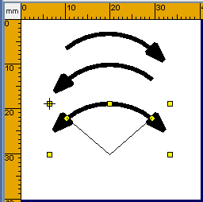 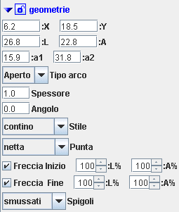 |
Archi Corde TorteIl Tipo Arco consente di disegnare Corde o Torte oltre al semplice arco. 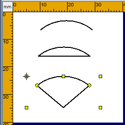 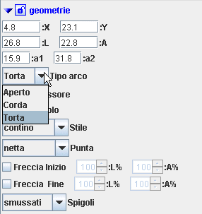 |
E possibile inoltre usare il Colore di riempimento.
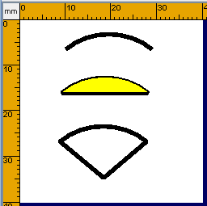 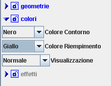 |
Il Gradiente negli ArchiAnalogamente a come si fa nel caso dei rettangoli e' possibile usare il gradiente per il colore di riempimento delle Torte o Corde (Archi chiusi). Il risultato ottenuto e' mostrato di seguito. 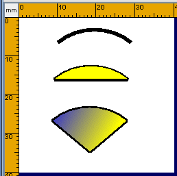 Per i dettagli su come si abilita il gradiente rimandiamo a Il Gradiente nei Rettangoli |